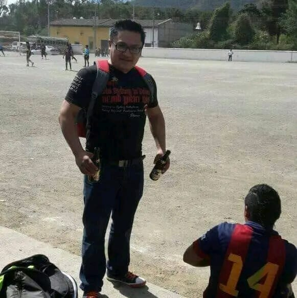
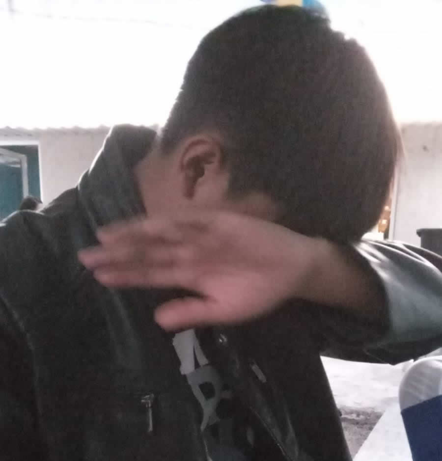
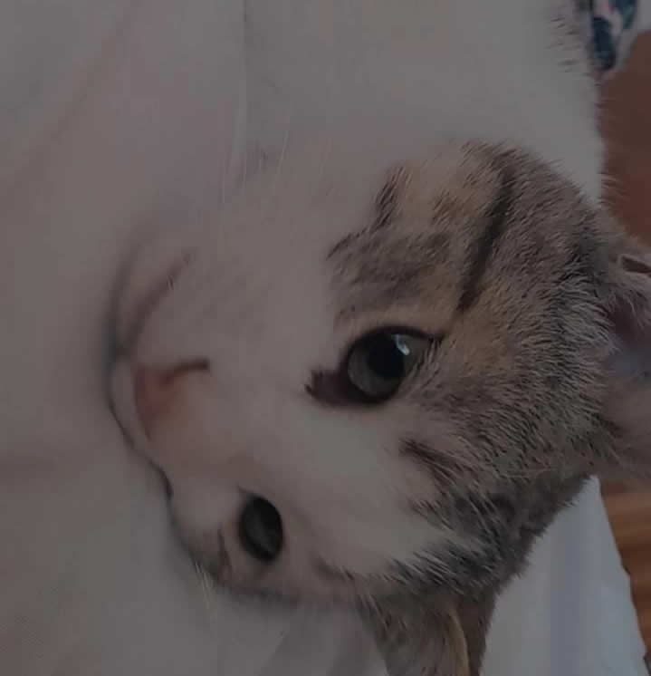

Su familia de conforma por Su padre José Edgar Perez Tapia que trabaja en los Estados Unidos, su hermano menor Alejandro Esau Perez Ambrocio.
Su madre Lorena Ambrocio Cruz y también tiene una media hermana llamada Daniela.
Su familia siempre ha sido algo disfuncional ya que también convivio durante 8 años con la novia de su padre Lucía Gutierrez Lopez y sus hijos Aldo Daniel Garcia Gutierrez y Osvaldo Yahir García Gutierrez.
Actualmente su familia más cercana es su padre, su hermano y su tía Xochilt Beatriz Pérez Tapia quien es su tutora legal en la escuela.
Además en su familia también esta viernes su hijo adoptivo (su gato).

José Edgar Perez Tapia

Alejandro Esau Perez Ambrocio.

Viernes